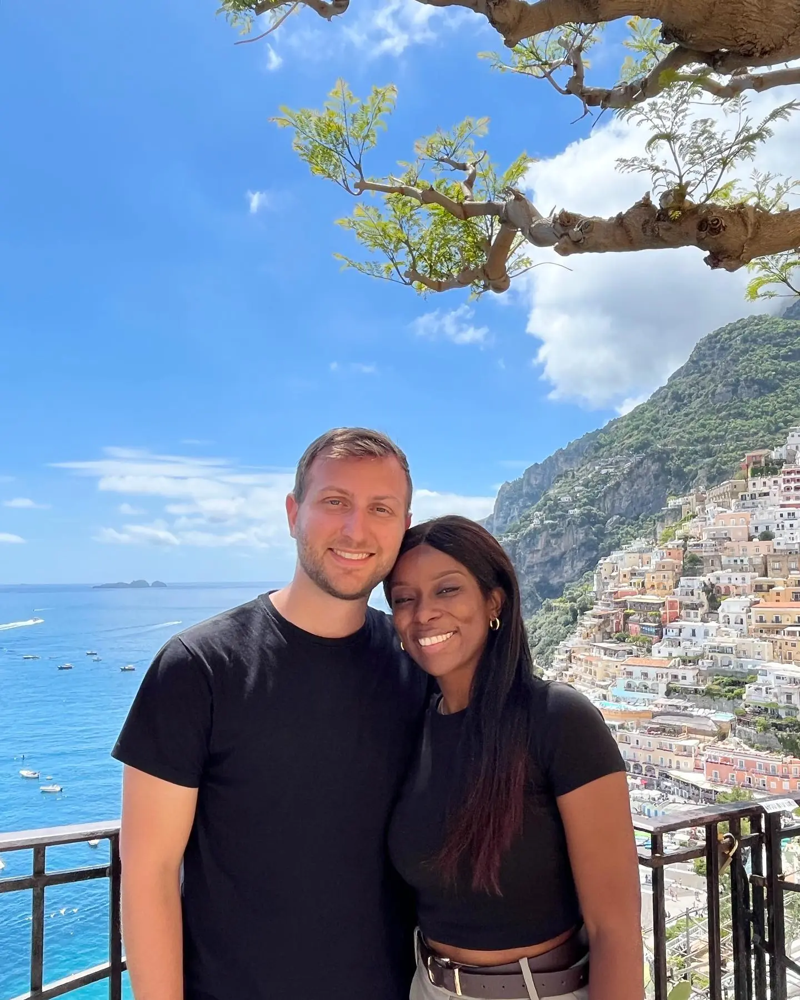

Positano · Most iconic01
The view over Positano
📍 The upper town & its terraced viewpoints
There's a moment, coming into Positano from above, where the whole town opens up beneath you: pale pinks, peaches and whites stacked steeply down to a bright wedge of sea, crowned by the majolica dome of Santa Maria Assunta. We just kept stopping to look. The higher terraces along the road give you the classic postcard frame, and the light is softest in the morning.
Best in the morningPostcard view